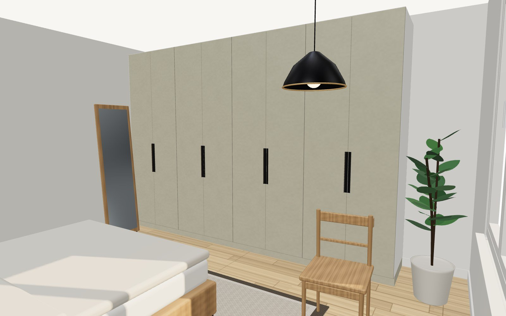
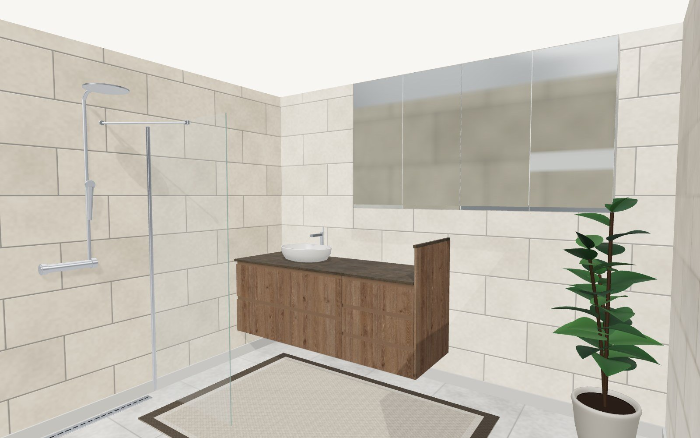
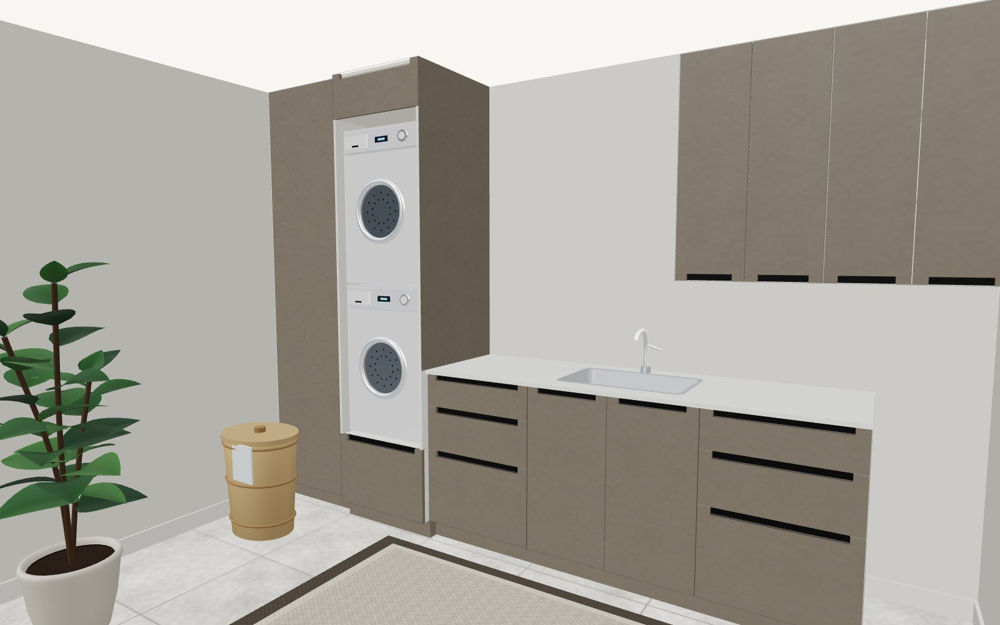
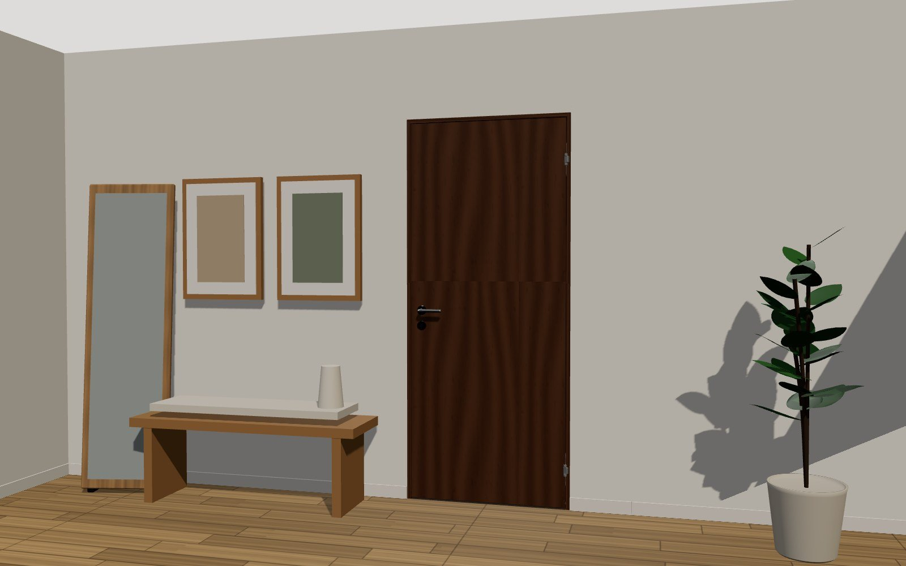

Hannaðu eldhúsið þitt
Veldu verkefni
Byrjaðu nýtt verkefni eða haltu áfram með eitt sem þegar er til.
Nýtt verkefni
Hannaðu heimilið þitt.
Innréttingar fyrir allt heimilið, hannaðar af þér og smíðaðar af okkur.
- 1Veldu rýmin
- 2Hannaðu í 3D
- 3Við förum yfir og sendum teikningar
Smíðað á ÍslandiEngin bindingVistast sjálfkrafa




Allt heimilið
Innihurðir
Hvað erum við að skoða?
Veldu eitt eða fleiri — við tökum þau fyrir eitt í einu.
Rétt áður en þú sendir inn
Hjálpar okkur að finna lausn sem hentar — engin binding.
Þú getur sleppt þessu, en það hjálpar söluaðila.
Dýpt
Hæð
Litur
Skilgreindu rýmið
Hvaða rými er þetta?
Strikalína sýnir opna hlið.
Fylla vegginn með skápum?
Þú getur breytt hverjum skáp á eftir: innvolsi, hurðum og breidd.
Ýttu á ＋ Ný eining til að bæta við fyrsta skápnum
hann birtist á veggnum og þú getur dregið hann til
hann birtist á veggnum og þú getur dregið hann til
Þínar upplýsingar
Söluaðili fer yfir skipulagið þitt og hefur samband til að fullkomna hönnunina.
Ókeypis og án skuldbindingar. Við höfum samband innan 3 virkra daga.
Vantar fornafn
Netfang lítur ekki rétt út
Vantar símanúmer
* þarf að fylla út — teikningarnar koma í tölvupósti. Við notum upplýsingarnar eingöngu til að hafa samband við þig vegna skipulagsins.
Með því að senda samþykkir þú skilmála Bjarnarins.
Smelltu á skúffu eða hurð til að opna
Takk fyrir!
- Söluaðili fer yfir skipulagið þitt.
- Teikningarnar eru uppfærðar ef þarf.
- Söluaðili hefur samband innan 3 virkra daga.